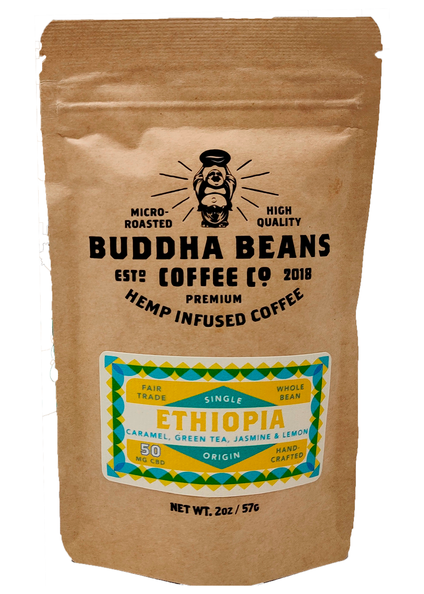
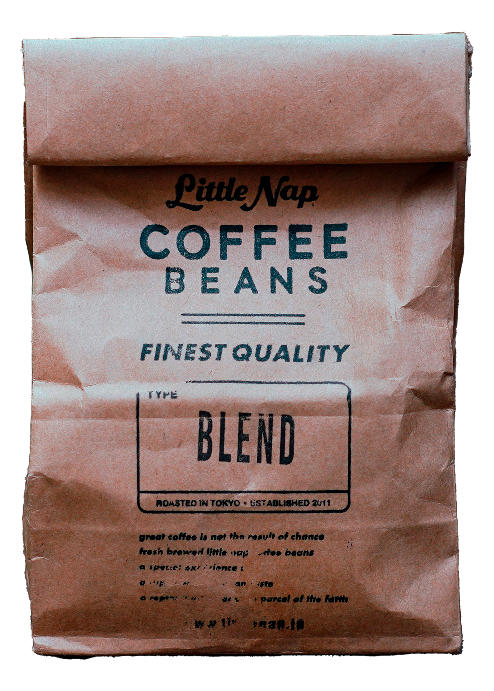
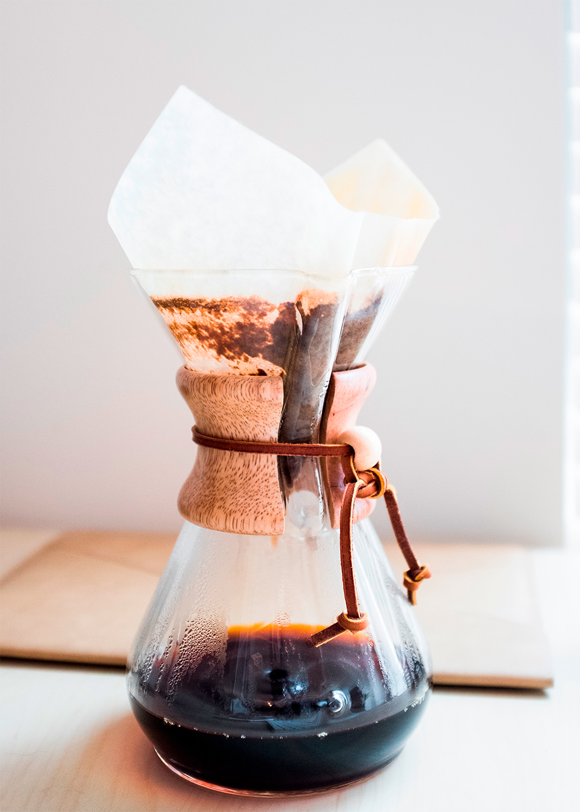
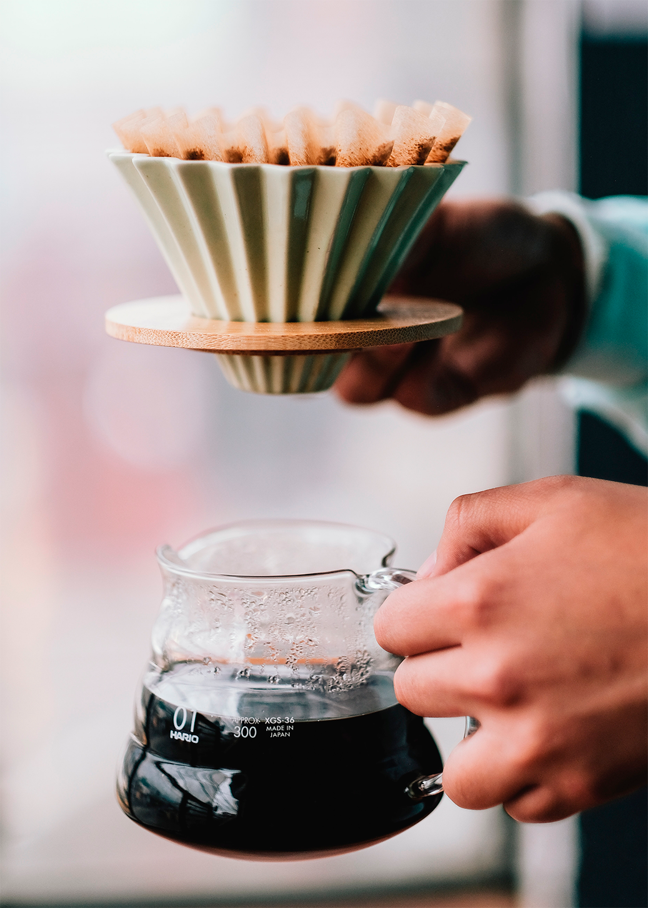
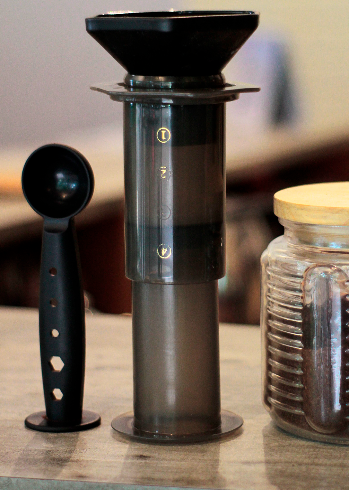

Tienda de café y accesorios
Café de Etiopía
El café de Etiopía es reconocido como uno de los mejores del mundo. Proveniente de la cuna del café, presenta una amplia variedad de perfiles de sabor, desde notas florales y cítricas hasta matices de frutos rojos y chocolate. Es apreciado por su delicadeza, acidez brillante y cuerpo ligero a medio, ofreciendo una experiencia sensorial única.
Café de Bolivia

El café de Bolivia es altamente valorado por su calidad y singularidad. Producido en regiones de gran altitud, como Yungas y Caranavi, se caracteriza por su sabor dulce y suave, con notas de chocolate, caramelo y frutos secos. Es reconocido por su acidez equilibrada y cuerpo medio, brindando una experiencia única para los amantes del café.
Café de Perú
El café de Perú es aclamado por su perfil de sabor distintivo y su calidad excepcional. Producido en diversas regiones, como Cajamarca y Amazonas, ofrece una variedad de perfiles, desde notas frutales y florales hasta matices de chocolate y nueces. Se destaca por su acidez brillante, cuerpo medio a completo y final limpio, brindando una experiencia de café gratificante y memorable.
Cafeteras
Cafetera Chemex
La cafetera Chemex es un método de preparación de café que destaca por su diseño elegante y funcional. Consiste en una jarra de vidrio en forma de reloj de arena, equipada con un cuello ancho y un filtro de papel especial. Permite un proceso de extracción lenta y suave, resaltando los sabores y aromas del café. Es ideal para apreciar tazas limpias y de cuerpo ligero, con notas brillantes y sutiles.
Cafetera V60
La cafetera V60 es un método de preparación de café manual que se caracteriza por su diseño en forma de cono. Consiste en una jarra o taza de cerámica o vidrio, un porta filtro en forma de V y filtros de papel delgados y desechables. Permite un control preciso del flujo de agua y tiempo de extracción, lo que resulta en una taza de café limpia y con una acidez equilibrada. Es apreciada por los amantes del café por su capacidad para resaltar las notas y sabores distintivos de los granos utilizados.
Cafetera Aeropress
La cafetera AeroPress es un dispositivo compacto y versátil utilizado para preparar café de manera rápida y sencilla. Consiste en un cilindro de plástico con un émbolo y un filtro de papel o metal. Permite controlar el tiempo de extracción y la presión aplicada al café, lo que resulta en una taza de café suave y de sabor equilibrado. Es apreciada por su facilidad de uso, portabilidad y capacidad para producir tanto café concentrado como más diluido, adaptándose a diferentes preferencias.